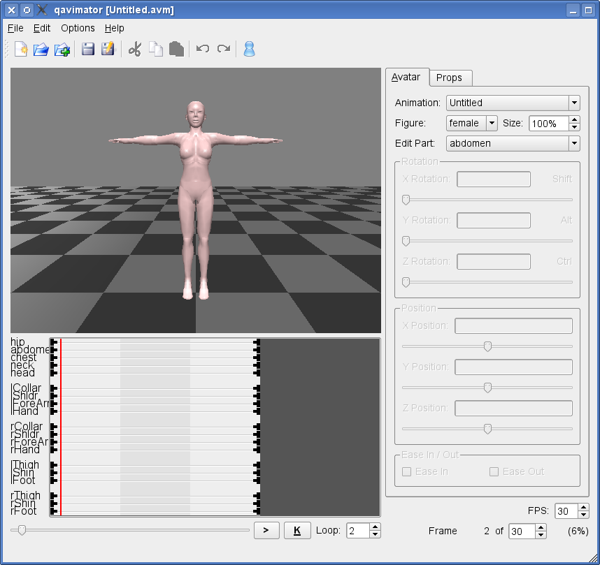
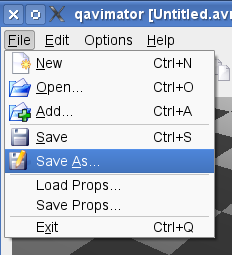

Start up QAvimator. You will see a window that looks roughly like this:

Don't let yourself be intimidated by the number of controls on the screen. For this tutorial we only need very few of them, and you will learn about how to use the rest one by one. First of all let us create a quick animation to see, how the general concept of QAvimator looks like.
First of all we want to make sure, that all settings for this quick tutorial are set up
correctly. For this, click on the "Options" menu and make sure that "Show Timeline" and
"Protect First Frame" are checked. This is not essential for creating animations, but to
give you the same look as we present here in the tutorial, those settings should be made.
Now look at the timeline below the animation preview window. You will see the animation
"tracks" there. Each track is associated with a body part of your animation. Now, click
on the "abdomen" track and move the red position bar to the frame with the number 2. You
can see the current frame number on the lower right corner of the window. We skip the first
frame here, as it has a special meaning. We will cover this topic later in this manual.
Now click on the "K" button right at the bottom of the window. "K" stands for "Keyframe"
and means a point in time, where your animation has a fixed position. Animations are not
created piece by piece, but the movements are calculated from one Keyframe to the next,
filling in the missing steps with linear or smooth motions.
After clicking on the Keyframe button, you will see a circle shaped image appearing on the
abdomen track where your red timeline marker is. This is indicating a Keyframe where nothing
has changed from the previous or to the next key. It has no effect on the animation yet,
but we will use it as an "anchor" for the motions we are about to create.
Next, move the timeline marker forward to frame number 10. Now drag the X Rotation slider
to a value of about 80.
You will see now, that another Keyframe has been created, and that
our previous anchor point has changed from circle shaped to triangle shaped. This means,
the anchor has now become a real Keyframe, which marks the start of a motion. The black line
shows the duration of the motion and the newly created triangle marks the end.
Now move the timeline marker to frame 15 and click the Keyframe button again. This means, from frame 10 to 15 there will be no further changes to the animation track. Another circle
gets drawn, so we have another anchor point.
Next, move the timeline marker forward to frame 25. Move the X Rotation slider back to 0 and
you will see that another motion with start and end markers has been created in the timeline.

That's it! You now have a very simple "bow" animation that you can play back by clicking on
the ">" button right next to the Keyframe button. It's not much yet, but should be enough to show you the basics. Save your animation by opening the "File" menu and selecting the
"Save As..." item. Choose a filename and append the ".avm" extension to save your work.